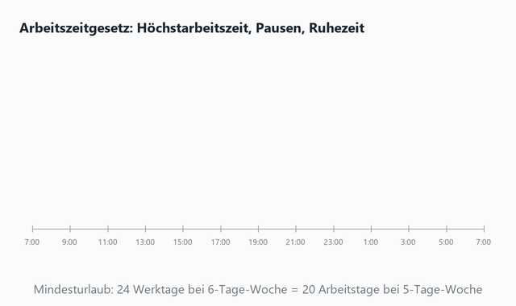
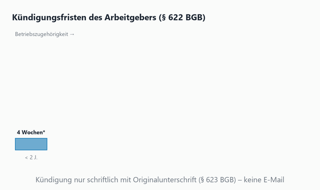

Arbeits- und Betriebsverfassungsrecht: Arbeitsverhältnisse gestalten, KI mit dem Betriebsrat einführen
Wer Teams aufbaut und KI einführt, bewegt sich im Arbeitsrecht: Welche Vertragsform passt, welche Rechte und Pflichten gelten, wie endet ein Arbeitsverhältnis rechtssicher? Und vor allem: Fast jede KI-Software im Betrieb berührt Mitbestimmungsrechte des Betriebsrats. In diesem Modul lernen Sie die Grundlagen des Individual- und Kollektivarbeitsrechts und wie Veränderungsprozesse mit KI rechtssicher gestaltet werden.
Rechtsstand: November 2026 (Mindestlohn 13,90 €, Minijob-Grenze 603 € im Monat). Werte und Gesetze ändern sich – vor der Prüfung den aktuellen Stand prüfen.
Arbeitsrecht im Überblick: Individual- und Kollektivarbeitsrecht
| Individualarbeitsrecht | Kollektivarbeitsrecht | |
|---|---|---|
| regelt | Beziehung zwischen Arbeitgeber und einzelnem Arbeitnehmer | Beziehungen zwischen Arbeitgeber(verbänden) und Belegschaftsvertretungen bzw. Gewerkschaften |
| Quellen | BGB (§§ 611a ff.), KSchG, TzBfG, ArbZG, BUrlG, EFZG, MiLoG, NachwG, AGG | BetrVG, Tarifvertragsgesetz, Mitbestimmungsgesetze |
| Instrumente | Arbeitsvertrag, Weisung, Kündigung | Tarifvertrag, Betriebsvereinbarung |
Rangfolge: Gesetz → Tarifvertrag → Betriebsvereinbarung → Arbeitsvertrag → Weisung. Grundsätzlich gilt das Günstigkeitsprinzip: Die rangniedrigere Regel darf zugunsten der Beschäftigten abweichen. Arbeitnehmer ist, wer im Dienst eines anderen weisungsgebunden und fremdbestimmt in persönlicher Abhängigkeit arbeitet (§ 611a BGB).
Individualarbeitsrecht: Arbeitgeber und Einzelne. Kollektivarbeitsrecht: Betriebsrat, Gewerkschaften, Tarif und Betriebsvereinbarung.
Arbeitsvertrag, Nachweisgesetz, Probezeit
- Abschluss: grundsätzlich formfrei (auch mündlich). Die Befristung braucht aber die Schriftform (§ 14 Abs. 4 TzBfG), sonst gilt der Vertrag als unbefristet.
- Nachweisgesetz: Der Arbeitgeber muss die wesentlichen Bedingungen schriftlich mitteilen (Parteien, Beginn, Ort, Tätigkeit, Entgelt, Arbeitszeit, Urlaub, Kündigungsfristen usw.), teils schon am ersten Arbeitstag. Seit 2025 ist auch die Textform möglich, wenn der Beschäftigte das Dokument speichern und ausdrucken kann (Ausnahmen in bestimmten Branchen).
- Probezeit: höchstens 6 Monate; Kündigungsfrist 2 Wochen. Nach 6 Monaten greift in Betrieben mit mehr als 10 Beschäftigten der Kündigungsschutz.
- Typische Klauseln: Tätigkeit und Versetzung, Vergütung und Überstunden, Arbeitszeit und mobiles Arbeiten, Verschwiegenheit, Nebentätigkeit, Rechte an Arbeitsergebnissen (Software, Modelle, Erfindungen nach Arbeitnehmererfindungsgesetz).
Arbeitsvertrag formfrei, Befristung schriftlich, Bedingungen nach Nachweisgesetz dokumentieren, Probezeit höchstens 6 Monate.
Arten von Arbeitsverhältnissen: unbefristet, befristet, Teilzeit, Minijob
| Form | Regeln |
|---|---|
| unbefristet, Vollzeit | Normalfall |
| befristet mit Sachgrund (§ 14 Abs. 1 TzBfG) | z. B. Vertretung, Projekt mit vorübergehendem Bedarf, Erprobung |
| befristet ohne Sachgrund (§ 14 Abs. 2) | höchstens 2 Jahre, bis zu dreimal verlängerbar, nur bei Neueinstellung (keine Vorbeschäftigung beim selben Arbeitgeber); in den ersten 4 Jahren nach Gründung bis 4 Jahre |
| Teilzeit (TzBfG) | Anspruch auf Verringerung bei mehr als 15 Beschäftigten und mehr als 6 Monaten; Brückenteilzeit (befristet 1–5 Jahre) bei mehr als 45 Beschäftigten; keine Benachteiligung |
| Minijob | Verdienstgrenze an den Mindestlohn gekoppelt: 2026 603 € im Monat (Mindestlohn 13,90 €); volle Arbeitnehmerrechte (Urlaub, Entgeltfortzahlung) |
Ohne Sachgrund: maximal 2 Jahre, drei Verlängerungen, nur Neueinstellung, schriftlich vor Beginn.
Wer jemanden nach dem Studium ohne Sachgrund befristen will, der schon als Werkstudent im Unternehmen war, scheitert meist am Vorbeschäftigungsverbot.
Leiharbeit, freie Mitarbeit und Scheinselbstständigkeit

Ein Verleiher mit Erlaubnis überlässt Beschäftigte an einen Entleiher. Höchstüberlassungsdauer grundsätzlich 18 Monate, Gleichstellung beim Entgelt (Equal Pay) grundsätzlich nach 9 Monaten, Kennzeichnung im Vertrag.
Selbstständige arbeiten auf Dienst- oder Werkvertragsbasis, frei in Zeit, Ort und Ausführung. Ist die Person in Wahrheit weisungsgebunden und eingegliedert, liegt Scheinselbstständigkeit vor: Sozialversicherungsbeiträge sind nachzuzahlen, ggf. Bußgelder und Strafbarkeit. Klärung über das Statusfeststellungsverfahren der Deutschen Rentenversicherung (§ 7a SGB IV).
Nicht der Vertragstitel, sondern die tatsächliche Durchführung entscheidet: Weisungen und Eingliederung sprechen für ein Arbeitsverhältnis.
Pflichten der Arbeitnehmer und der Arbeitgeber
| Arbeitnehmer | Arbeitgeber |
|---|---|
| Arbeitspflicht: persönlich, nach Weisung (§ 106 GewO: Inhalt, Ort, Zeit nach billigem Ermessen) | Vergütungspflicht (mindestens Mindestlohn) |
| Treuepflicht: Verschwiegenheit über Geschäftsgeheimnisse, kein Wettbewerb während des Arbeitsverhältnisses, Schäden abwenden | Beschäftigungspflicht |
| Pflicht zur Rücksichtnahme, z. B. freigegebene KI-Werkzeuge nutzen, keine vertraulichen Daten in öffentliche KI-Dienste | Fürsorgepflicht: Arbeitsschutz, Schutz der Persönlichkeitsrechte und Daten, Gleichbehandlung (AGG), Weiterbildung bei neuen Systemen |
Haftung der Beschäftigten nach den Grundsätzen des innerbetrieblichen Schadensausgleichs: bei leichter Fahrlässigkeit keine Haftung, bei mittlerer anteilig, bei grober Fahrlässigkeit und Vorsatz in der Regel voll.
Arbeitnehmer schulden Arbeit und Loyalität, Arbeitgeber Lohn, Beschäftigung und Fürsorge.
Arbeitszeit, Urlaub, Entgeltfortzahlung, Mindestlohn

| Regel | Inhalt |
|---|---|
| Arbeitszeit (ArbZG) | werktäglich 8 Stunden, bis 10 Stunden bei Ausgleich auf 8 Stunden im Schnitt (6 Monate); Ruhezeit 11 Stunden; Pausen 30 Minuten bei mehr als 6, 45 Minuten bei mehr als 9 Stunden; Arbeitszeit ist zu erfassen |
| Urlaub (BUrlG) | mindestens 24 Werktage bei 6-Tage-Woche = 20 Arbeitstage bei 5-Tage-Woche; voller Anspruch nach 6 Monaten Wartezeit |
| Entgeltfortzahlung (EFZG) | bei Krankheit bis 6 Wochen, nach 4 Wochen Beschäftigung |
| Mindestlohn (MiLoG) | 2026: 13,90 € je Stunde, 2027: 14,60 € |
8 (bis 10) Stunden am Tag, 11 Stunden Ruhe, 20 Urlaubstage bei 5-Tage-Woche, 6 Wochen Entgeltfortzahlung.
Mobiles Arbeiten und Arbeitsschutz
Telearbeit ist ein vom Arbeitgeber eingerichteter fester Bildschirmarbeitsplatz zu Hause (Arbeitsstättenverordnung). Mobiles Arbeiten ist ortsflexibel. Einen allgemeinen gesetzlichen Anspruch gibt es nicht; Regelung im Vertrag oder in einer Betriebsvereinbarung. Die Ausgestaltung mobiler Arbeit ist mitbestimmungspflichtig (§ 87 Abs. 1 Nr. 14 BetrVG).
Arbeitsschutzgesetz: Gefährdungsbeurteilung – auch für psychische Belastungen (Arbeitsverdichtung, ständige Erreichbarkeit, Überwachung durch Kennzahlen), Unterweisung, Maßnahmen. KI kann entlasten, aber auch Taktung und Kontrolle erhöhen.
Auch zu Hause gelten Arbeitszeit, Arbeitsschutz und Datenschutz; Gefährdungsbeurteilung schließt psychische Belastung ein.
Beendigung: Kündigung, Aufhebungsvertrag, Befristungsende
| Art | Merkmale |
|---|---|
| ordentliche Kündigung | mit Frist (§ 622 BGB), bei KSchG sozial gerechtfertigt |
| außerordentliche (fristlose) Kündigung | wichtiger Grund (§ 626 BGB), z. B. Diebstahl, schwere Beleidigung; nur innerhalb von 2 Wochen ab Kenntnis; oft vorher Abmahnung nötig |
| Aufhebungsvertrag | einvernehmlich, schriftlich (§ 623 BGB); kein Betriebsrat-Anhörungsrecht; Sperrzeit beim Arbeitslosengeld möglich |
| Befristungsende | endet automatisch, wenn die Befristung wirksam war |
Kündigung und Aufhebungsvertrag immer schriftlich mit Originalunterschrift – E-Mail oder Messenger reichen nicht.
Eine Abmahnung muss das Fehlverhalten konkret benennen und für den Wiederholungsfall arbeitsrechtliche Konsequenzen androhen – pauschale Ermahnungen reichen nicht.
Kündigungsfristen und Kündigungsschutzgesetz


Soziale Rechtfertigung (§ 1 KSchG): personenbedingt (z. B. lang andauernde Krankheit mit negativer Prognose), verhaltensbedingt (Pflichtverstoß, meist nach Abmahnung), betriebsbedingt (Arbeitsplatz fällt durch unternehmerische Entscheidung weg, keine Weiterbeschäftigung möglich, Sozialauswahl nach Betriebszugehörigkeit, Alter, Unterhaltspflichten, Schwerbehinderung). Sonderkündigungsschutz: Schwangere und Elternzeit, schwerbehinderte Menschen (Zustimmung des Integrationsamts), Betriebsratsmitglieder.
KI und Kündigung: Fällt ein Arbeitsplatz durch KI weg, ist eine betriebsbedingte Kündigung möglich – aber erst nach Prüfung freier Arbeitsplätze, auch nach zumutbarer Umschulung, und mit Sozialauswahl.
KSchG ab mehr als 10 Beschäftigten und 6 Monaten; Kündigung braucht einen personen-, verhaltens- oder betriebsbedingten Grund; Klage binnen 3 Wochen.
„Mitarbeiterin seit 9 Jahren im Betrieb“ → Frist des Arbeitgebers 3 Monate zum Monatsende.
Zeugnis und Pflichten nach dem Ende
Anspruch auf ein einfaches (Art und Dauer) oder auf Verlangen qualifiziertes Zeugnis (zusätzlich Leistung und Verhalten). Es muss wahr und wohlwollend sein, klar formuliert, ohne versteckte Botschaften. Elektronische Form nur mit Einwilligung.
Herausgabe von Arbeitsmitteln und Daten, Löschung von Zugängen, Verschwiegenheit über Geschäftsgeheimnisse; ein nachvertragliches Wettbewerbsverbot gilt nur, wenn schriftlich vereinbart, höchstens 2 Jahre und mit Karenzentschädigung von mindestens der Hälfte der letzten Bezüge.
Zeugnis: wahr und wohlwollend. Wettbewerbsverbot nach dem Ende nur mit Entschädigung.
Betriebsverfassungsgesetz: Betriebsrat, Wahl, Aufgaben
- Errichtung: in Betrieben mit mindestens 5 ständigen wahlberechtigten Arbeitnehmern, von denen 3 wählbar sind. Regelmäßige Wahlen alle 4 Jahre (zuletzt 2026). Größe nach Belegschaft.
- Aufgaben (§ 80): Einhaltung von Gesetzen, Tarifen und Betriebsvereinbarungen überwachen, Gleichstellung und Beschäftigungssicherung fördern, Anregungen einbringen. Der Arbeitgeber muss rechtzeitig und umfassend informieren.
- Grundsätze (§ 2, § 74): vertrauensvolle Zusammenarbeit, monatliche Besprechung, Friedenspflicht (keine Arbeitskämpfe im Betrieb).
- Kosten trägt der Arbeitgeber; Betriebsratsmitglieder sind für ihre Aufgaben freizustellen und besonders vor Kündigung geschützt.
- Ab mehr als 100 Beschäftigten: Wirtschaftsausschuss, der über wirtschaftliche Angelegenheiten unterrichtet wird.
Betriebsrat ab 5 Arbeitnehmern, Wahl alle 4 Jahre, vertrauensvolle Zusammenarbeit, Kosten trägt der Arbeitgeber.
Beteiligungsrechte: Information, Beratung, Mitbestimmung

| Bereich | Beispiele | Stärke |
|---|---|---|
| soziale Angelegenheiten (§ 87) | Ordnung im Betrieb, Arbeitszeit, technische Überwachungseinrichtungen, Gesundheitsschutz, mobile Arbeit | echte Mitbestimmung; Einigungsstelle |
| personelle Angelegenheiten (§§ 92–105) | Personalplanung, Auswahlrichtlinien (§ 95), Einstellung und Versetzung (§ 99), Kündigung (§ 102) | Beratung, Zustimmung, Anhörung |
| wirtschaftliche Angelegenheiten (§§ 106–113) | Betriebsänderung: Interessenausgleich, Sozialplan | Beratung; Sozialplan erzwingbar |
| Gestaltung von Arbeitsplatz und Ablauf (§§ 90, 91) | Planung neuer Technik, auch KI | Unterrichtung, Beratung |
Bei echter Mitbestimmung (§ 87) darf der Arbeitgeber ohne Einigung nicht handeln – sonst entscheidet die Einigungsstelle.
Eine Kündigung ohne vorherige Anhörung des Betriebsrats ist unwirksam (§ 102), selbst wenn sie sonst berechtigt wäre.
KI im Betrieb und Betriebsrat: §§ 80, 87, 90, 95 BetrVG

| Norm | Inhalt |
|---|---|
| § 90 Abs. 1 Nr. 3 | rechtzeitige Unterrichtung über die Planung von Arbeitsverfahren und -abläufen einschließlich des Einsatzes von KI, Beratung über Auswirkungen |
| § 80 Abs. 3 | muss der Betriebsrat die Einführung oder Anwendung von KI beurteilen, gilt die Hinzuziehung eines Sachverständigen als erforderlich (Kosten trägt der Arbeitgeber) |
| § 87 Abs. 1 Nr. 6 | Mitbestimmung bei technischen Einrichtungen, die geeignet sind, Verhalten oder Leistung zu überwachen – praktisch fast jede Software mit Nutzerdaten, auch KI-Assistenten |
| § 95 Abs. 2a | Auswahlrichtlinien (Einstellung, Versetzung, Kündigung) sind auch dann zustimmungspflichtig, wenn sie mithilfe von KI aufgestellt oder angewendet werden |
| § 87 Abs. 1 Nr. 7, § 91 | Gesundheitsschutz, Belastungen durch neue Arbeitsweisen |
Zusätzlich: Pflichten aus der KI-Verordnung (Betreiber von Hochrisiko-KI informieren die Beschäftigtenvertretung vor dem Einsatz am Arbeitsplatz) und aus dem Datenschutz (Rechtsgrundlage für Beschäftigtendaten, ggf. die Betriebsvereinbarung selbst nach Art. 88 DSGVO).
KI im Betrieb = Unterrichtung (§ 90), Sachverständiger (§ 80 Abs. 3), Mitbestimmung bei Überwachungseignung (§ 87 Abs. 1 Nr. 6) und bei Auswahlrichtlinien (§ 95 Abs. 2a).
„KI-Tool wertet Bearbeitungszeiten je Mitarbeitendem aus“ → § 87 Abs. 1 Nr. 6 (Mitbestimmung), § 90 (Unterrichtung), ggf. § 80 Abs. 3; Einführung erst nach Einigung bzw. Spruch der Einigungsstelle.
Betriebsvereinbarung zur KI-Einführung
| Regelungspunkt | Beispiel |
|---|---|
| Geltungsbereich, Systeme | freigegebene KI-Werkzeuge, Rahmen-BV mit Anlagen je System |
| Zwecke und Verbote | Unterstützung der Arbeit; keine Leistungs- und Verhaltenskontrolle einzelner Beschäftigter |
| Daten | welche Daten, Speicherdauer, Zugriffsrechte, Anonymisierung von Auswertungen |
| Auswertungen | nur aggregiert ab einer Mindestgruppengröße, Verbot personenbezogener Rankings |
| Menschliche Entscheidung | keine personellen Maßnahmen allein auf Basis von KI-Ergebnissen |
| Qualifizierung | Schulungsanspruch, KI-Kompetenz, Lernzeit |
| Beschäftigungssicherung | Umschulung vor Kündigung, Regelungen bei Wegfall von Aufgaben |
| Evaluation, Änderungen | Prüfung nach 12 Monaten, Verfahren für neue Funktionen, KI-Ausschuss, Kontrolle durch den Betriebsrat |
Eine gute KI-Betriebsvereinbarung regelt Zwecke, Daten, Auswertungen, menschliche Entscheidung, Qualifizierung, Beschäftigungssicherung und Evaluation.
Veränderungsprozesse rechtssicher gestalten: Betriebsänderung, Interessenausgleich, Sozialplan
Eine Betriebsänderung (§ 111 BetrVG, Unternehmen mit mehr als 20 wahlberechtigten Arbeitnehmern) liegt u. a. vor bei Einschränkung oder Stilllegung, Zusammenschluss, grundlegender Änderung der Organisation oder der Betriebsanlagen und bei Einführung grundlegend neuer Arbeitsmethoden und Fertigungsverfahren – dazu kann eine umfassende KI-Einführung gehören.
- Interessenausgleich: ob, wann und wie die Änderung durchgeführt wird; verhandelbar, nicht erzwingbar – aber ohne ernsthaften Versuch drohen Nachteilsausgleichsansprüche (§ 113).
- Sozialplan: Ausgleich oder Milderung wirtschaftlicher Nachteile (Abfindungen, Qualifizierung, Transfergesellschaft); bei Personalabbau ab bestimmten Schwellen erzwingbar über die Einigungsstelle.
- Früh planen und den Betriebsrat unterrichten (§§ 90, 111)
- Auswirkungen auf Aufgaben, Qualifikationen und Stellen analysieren
- Qualifizierungs- und Umsetzungskonzept entwickeln (Beschäftigungssicherung)
- Betriebsvereinbarung, ggf. Interessenausgleich und Sozialplan verhandeln
- Umsetzen, kommunizieren, evaluieren (Change Management, Modul 10)
Große KI-Einführungen können Betriebsänderungen sein: Interessenausgleich versuchen, Sozialplan verhandeln, Qualifizierung vor Abbau.
Übungen mit Musterlösung
Tragen Sie Ihre Antworten in die Felder ein. Der Rechner in Lektion 6 hilft bei Aufgabe 4.
Aufgabe 1: Kündigungsfrist
2 PunkteEine Mitarbeiterin ist seit 9 Jahren im Betrieb. Die Kündigung des Arbeitgebers geht ihr am 20. März zu. a) Welche Frist gilt? b) Zu welchem Tag endet das Arbeitsverhältnis frühestens?
Lösung anzeigen
a) 3 Monate zum Monatsende (1 P.) · b) 30. Juni (1 P.).
Aufgabe 2: Gilt das Kündigungsschutzgesetz?
3 Punkte1. Betrieb mit 8 Beschäftigten, Mitarbeiter seit 2 Jahren. 2. Betrieb mit 50 Beschäftigten, Mitarbeiterin seit 4 Monaten. 3. Betrieb mit 50 Beschäftigten, Mitarbeiter seit 3 Jahren.
Lösung anzeigen
1. nein (nicht mehr als 10 Beschäftigte) · 2. nein (Wartezeit 6 Monate nicht erfüllt) · 3. ja. Je 1 Punkt.
Aufgabe 3: Befristung ohne Sachgrund
4 PunkteZulässig? 1. Neueinstellung, 18 Monate, innerhalb der Laufzeit zweimal verlängert. 2. Neueinstellung, befristet auf 26 Monate. 3. Ein früherer Werkstudent des Unternehmens wird nach dem Studium sachgrundlos befristet eingestellt. 4. Die Befristung wurde nur per E-Mail vereinbart.
Lösung anzeigen
1. zulässig · 2. unzulässig (mehr als 2 Jahre) · 3. in der Regel unzulässig (Vorbeschäftigung) · 4. unwirksam (Schriftform fehlt) – das Arbeitsverhältnis gilt als unbefristet. Je 1 Punkt.
Aufgabe 4: Urlaub und Minijob
2 Punktea) Wie viele Tage gesetzlichen Mindesturlaub hat eine Teilzeitkraft mit 3 Arbeitstagen pro Woche? b) Wie viele Stunden im Monat darf eine Minijobberin 2026 zum Mindestlohn von 13,90 € höchstens arbeiten (Grenze 603 €, auf eine Nachkommastelle)?
Lösung anzeigen
a) 24 / 6 × 3 = 12 Tage (1 P.) · b) 603 / 13,90 ≈ 43,4 Stunden (1 P.).
Aufgabe 5: Scheinselbstständigkeit
3 PunkteEin „freier“ Data Scientist arbeitet seit einem Jahr ausschließlich für ein Unternehmen, täglich von 9 bis 17 Uhr im Büro, mit Firmenlaptop, nimmt an Teambesprechungen teil und erhält Aufgaben von der Teamleitung. Beurteilen Sie den Fall.
Lösung anzeigen
Merkmale eines Arbeitsverhältnisses: Weisungsgebundenheit in Zeit, Ort und Inhalt; Eingliederung (Team, Besprechungen, Arbeitsmittel); nur ein Auftraggeber, kein Unternehmerrisiko (2 P.). Wahrscheinlich Scheinselbstständigkeit: Nachzahlung der Sozialversicherungsbeiträge droht; Statusfeststellungsverfahren, Vertragsgestaltung ändern oder Anstellung (1 P.).
Aufgabe 6: Arbeitszeit
3 PunkteZulässig nach ArbZG? 1. Dauerhaft 10 Stunden je Werktag ohne Ausgleich. 2. Arbeitsende 23 Uhr, Arbeitsbeginn am nächsten Tag 8 Uhr. 3. 7 Stunden Arbeit ohne Pause.
Lösung anzeigen
1. unzulässig (Ausgleich auf durchschnittlich 8 Stunden fehlt) · 2. unzulässig (nur 9 Stunden Ruhezeit) · 3. unzulässig (mindestens 30 Minuten Pause bei mehr als 6 Stunden). Je 1 Punkt.
Aufgabe 7: Beteiligungsrechte
4 PunkteWelches Recht hat der Betriebsrat? 1. Einführung eines KI-Tools, das Bearbeitungszeiten je Mitarbeitendem auswertet. 2. Ordentliche Kündigung eines Mitarbeiters. 3. Einstellung einer Data Scientist. 4. Frühe Planung einer neuen KI-Anwendung in der Sachbearbeitung.
Lösung anzeigen
1. Mitbestimmung (§ 87 Abs. 1 Nr. 6) · 2. Anhörung (§ 102) · 3. Zustimmungsverweigerungsrecht (§ 99) · 4. Unterrichtung und Beratung (§ 90). Je 1 Punkt.
Aufgabe 8: KI-Betriebsvereinbarung
4 PunkteNennen Sie vier Regelungspunkte einer Betriebsvereinbarung zur Einführung eines KI-Assistenten in der Sachbearbeitung.
Lösung anzeigen
Zum Beispiel: Zwecke und Verbot der individuellen Leistungskontrolle; verarbeitete Daten, Speicherdauer, Zugriffsrechte; nur aggregierte Auswertungen; keine personellen Maßnahmen allein auf KI-Basis; Qualifizierung und Lernzeit; Beschäftigungssicherung; Evaluation und Verfahren für neue Funktionen. Je Punkt 1 Punkt.
Aufgabe 9: Beendigung
3 Punktea) Innerhalb welcher Frist muss eine außerordentliche Kündigung ab Kenntnis des Grundes erklärt werden? b) Welche Form braucht ein Aufhebungsvertrag? c) Innerhalb welcher Frist muss ein Arbeitnehmer Kündigungsschutzklage erheben?
Lösung anzeigen
a) 2 Wochen · b) Schriftform mit Originalunterschrift · c) 3 Wochen nach Zugang. Je 1 Punkt.
Aufgabe 10: Betriebsänderung
3 PunkteEin Versicherer mit 600 Beschäftigten führt KI in der gesamten Schadenbearbeitung ein; Arbeitsweisen ändern sich grundlegend, Stellen sollen wegfallen. Welche Instrumente sieht das Betriebsverfassungsgesetz vor, und was unterscheidet sie?
Lösung anzeigen
Betriebsänderung nach § 111 (grundlegend neue Arbeitsmethoden, ggf. Personalabbau) (1 P.). Interessenausgleich: ob, wann, wie – muss ernsthaft versucht werden, ist aber nicht erzwingbar (1 P.). Sozialplan: Ausgleich wirtschaftlicher Nachteile (Abfindung, Qualifizierung) – über die Einigungsstelle erzwingbar (1 P.).
Aufgabe 11: Arbeitszeugnis
2 Punktea) Worauf hat eine Beschäftigte auf Verlangen Anspruch: einfaches oder qualifiziertes Zeugnis? b) Welche beiden Grundsätze muss ein Zeugnis erfüllen?
Lösung anzeigen
a) qualifiziertes Zeugnis mit Leistung und Verhalten (1 P.) · b) wahr und wohlwollend (1 P.).
Aufgabe 12: Situationsaufgabe KI-Einführung mit Betriebsrat
8 PunkteDie Muster Logistik GmbH (350 Beschäftigte, Betriebsrat) will einen KI-Assistenten für die Disposition einführen. Er schlägt Touren vor, protokolliert alle Eingaben und kann auswerten, wie oft Disponenten seinen Vorschlägen folgen. Zwei befristete Projektstellen sollen geschaffen werden; langfristig sollen zwei Disponentenstellen entfallen. Beschreiben Sie ein rechtssicheres Vorgehen.
Lösung anzeigen
Betriebsrat (3 P.): frühe Unterrichtung und Beratung (§ 90), Sachverständiger (§ 80 Abs. 3), Mitbestimmung wegen Überwachungseignung (§ 87 Abs. 1 Nr. 6) – Einführung erst nach Einigung, Betriebsvereinbarung (Zwecke, keine individuelle Leistungskontrolle, nur aggregierte Auswertungen, Speicherfristen, Qualifizierung, Evaluation). Personal (2 P.): Projektstellen befristet mit Sachgrund (vorübergehender Projektbedarf) oder sachgrundlos bei Neueinstellung bis 2 Jahre, schriftlich; Einstellung mit Zustimmung nach § 99. Stellenabbau (2 P.): vorrangig Umsetzung und Qualifizierung; sonst betriebsbedingte Kündigung mit Sozialauswahl, Anhörung (§ 102), Fristen nach § 622; prüfen, ob eine Betriebsänderung vorliegt (Interessenausgleich, Sozialplan). Weitere Regeln (1 P.): Datenschutz (Rechtsgrundlage, Information, ggf. DSFA), Arbeitsschutz (psychische Belastung), KI-Kompetenz.
Abschlussquiz Modul 16
20 Fragen im Stil der schriftlichen Prüfung, jeweils eine richtige Antwort. Ab 14 richtigen Antworten (70 %) sind Sie gut vorbereitet.
Das Wichtigste auf einen Blick
Überblick
Individual- und Kollektivarbeitsrecht; Günstigkeitsprinzip.
Vertrag
formfrei, Befristung schriftlich, Nachweisgesetz, Probezeit 6 Monate.
Formen
befristet (ohne Sachgrund 2 J.), Teilzeit, Minijob 603 €, Leiharbeit.
Freie Mitarbeit
Weisung und Eingliederung → Scheinselbstständigkeit.
Pflichten
Arbeit und Treue; Lohn, Beschäftigung, Fürsorge.
Zeit und Urlaub
8/10 h, 11 h Ruhe, 20 Tage bei 5-Tage-Woche, 6 Wochen Entgeltfortzahlung.
Kündigung
schriftlich, § 622-Fristen, KSchG ab > 10 und 6 Monaten, Klage 3 Wochen.
Betriebsrat
ab 5 AN; Information, Beratung, Mitbestimmung; Anhörung vor Kündigung.
KI
§§ 90, 80 Abs. 3, 87 Abs. 1 Nr. 6, 95 Abs. 2a; Betriebsvereinbarung.
Veränderung
Betriebsänderung: Interessenausgleich, Sozialplan, Qualifizierung.
Glossar Modul 16
| Begriff | Erklärung |
|---|---|
| Abmahnung | Rüge eines Pflichtverstoßes mit Androhung von Konsequenzen |
| Betriebsvereinbarung | Vertrag zwischen Arbeitgeber und Betriebsrat mit unmittelbarer Wirkung |
| Einigungsstelle | Schlichtungsgremium bei Nichteinigung |
| Interessenausgleich | Vereinbarung über Ob und Wie einer Betriebsänderung |
| KSchG | Kündigungsschutzgesetz |
| Nachweisgesetz | Pflicht, wesentliche Arbeitsbedingungen schriftlich mitzuteilen |
| Scheinselbstständigkeit | formal selbstständig, tatsächlich Arbeitsverhältnis |
| Sozialauswahl | Auswahl bei betriebsbedingter Kündigung nach sozialen Kriterien |
| Sozialplan | Ausgleich wirtschaftlicher Nachteile einer Betriebsänderung |
| TzBfG | Teilzeit- und Befristungsgesetz |
Weiter mit Modul 17: Zukunftskompetenzen – Selbstorganisation, kritisches Denken, Zusammenarbeit und Kommunikation.